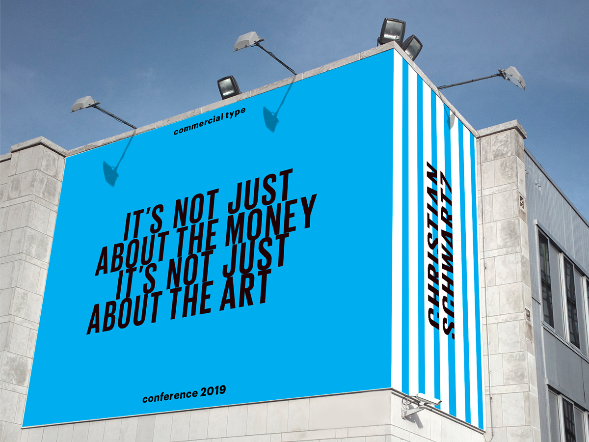
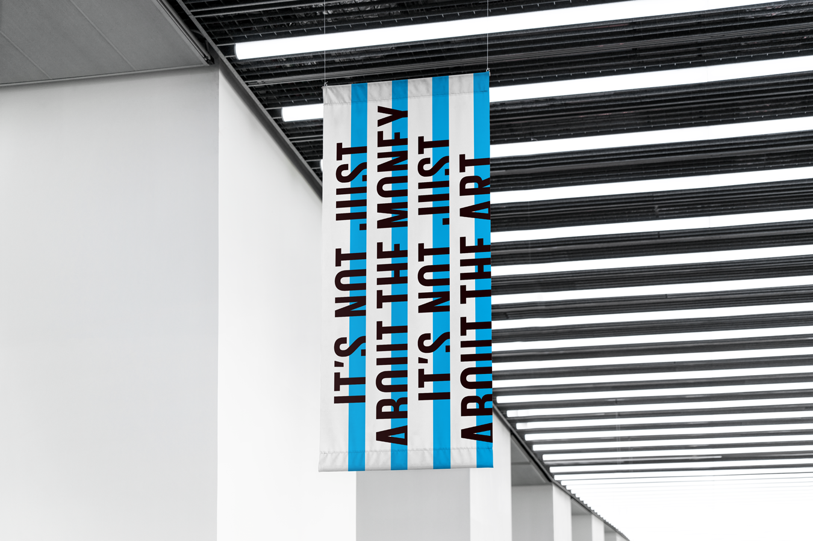
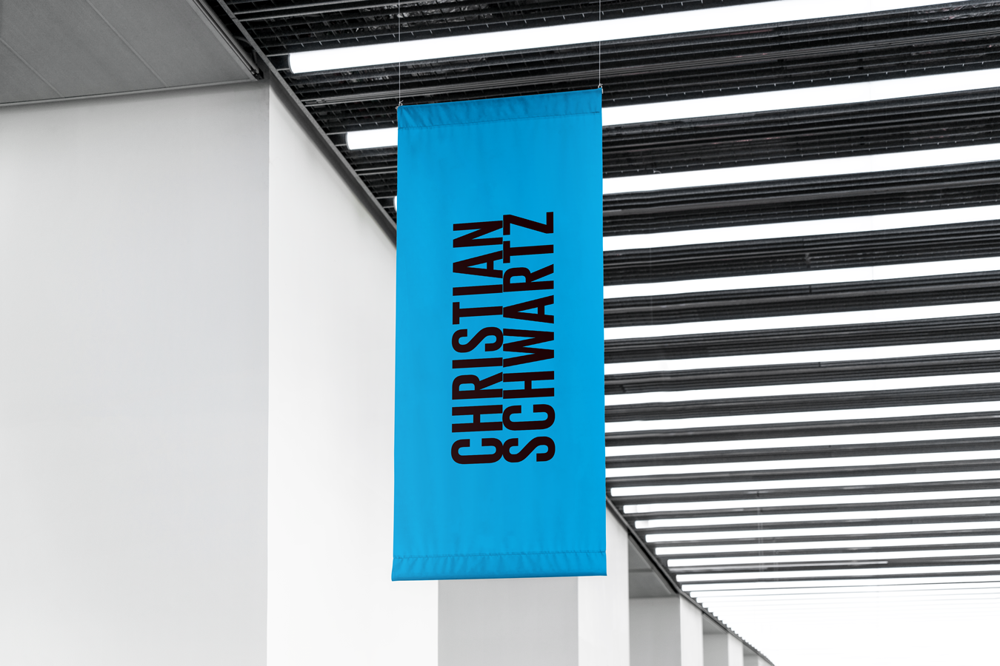
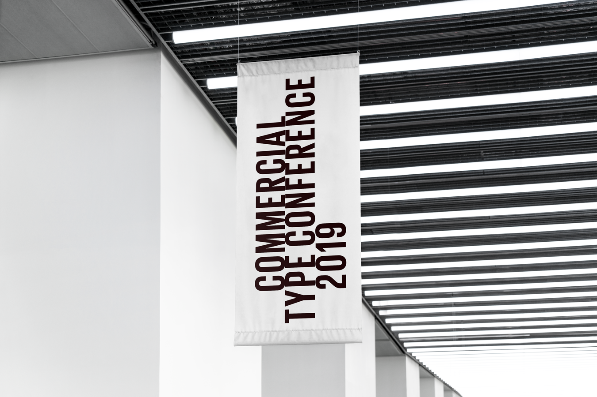
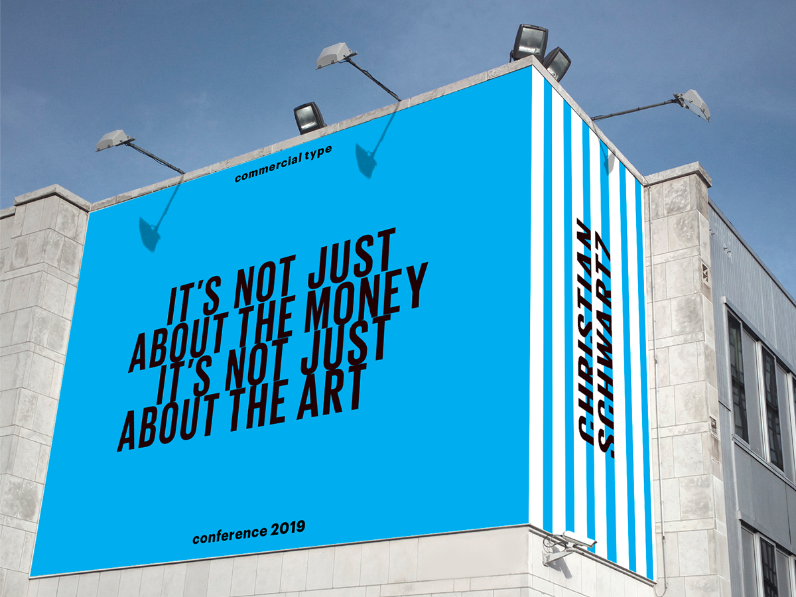
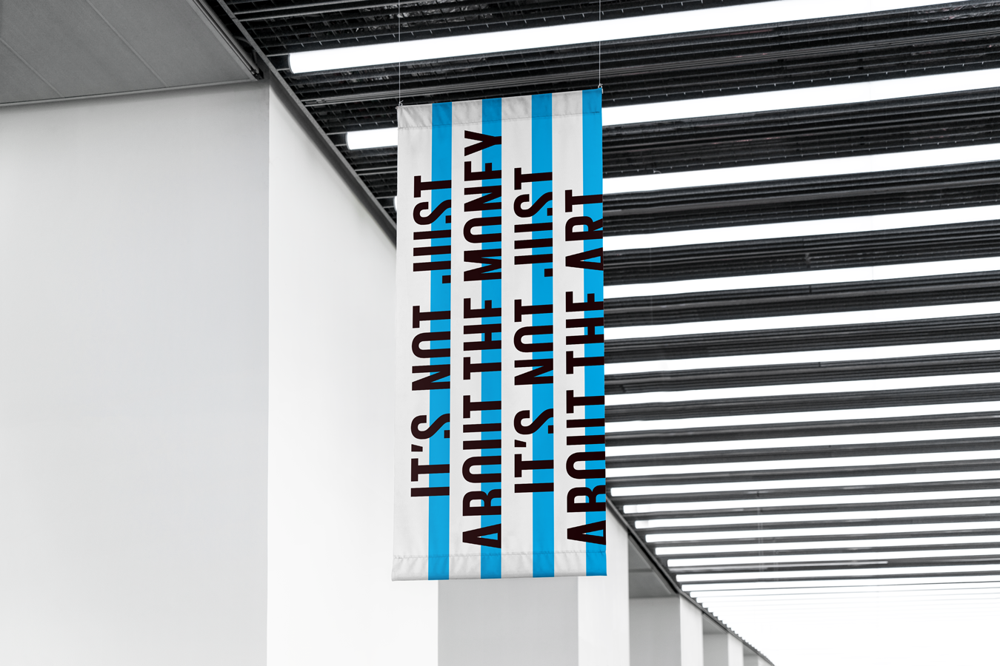
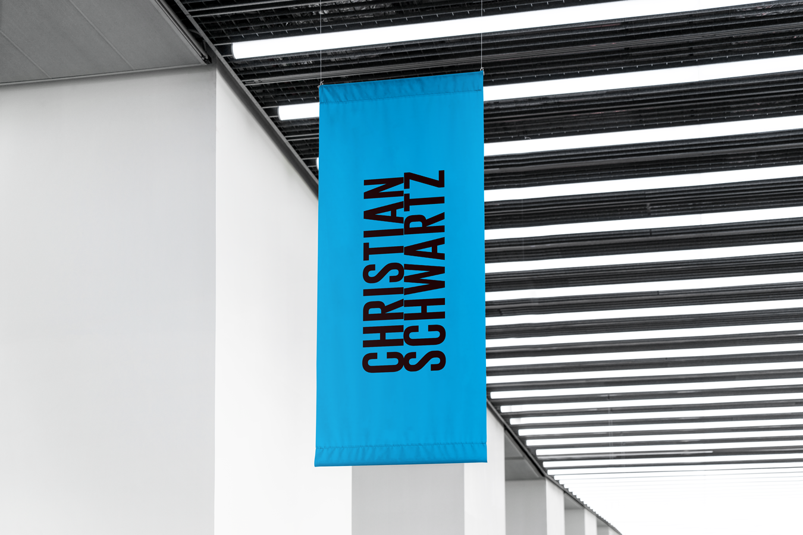
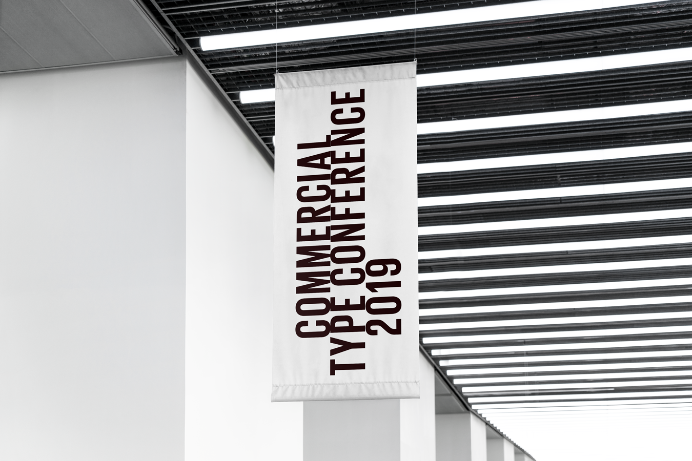

christian schwartz
2015
Type
Print design
Software
Indesign, Photoshop
A poster design based on typography, color and shapes.
The theme of the design was to announce a type talk that would be done by
Christian Schwartz, a typographer from the Commercial Type foundry.
The mandate was to use a font that the typographer or foundry designed.
In my case, I used the the typeface, Graphik.
The original project only asked to design a large poster,
but later on, was designed and adapted to a fictional conference event,
a display on a building billboard, and a series of hanging banners.
 






